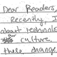
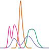
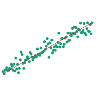
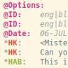
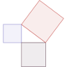

Portfolio Data Analyses Cambridge street trees What kinds of trees line Cambridge streets? Code • Writeup • Interactive map  Automatic essay scoring How accurately can essay scores be predicted? Code • Writeup • Slide deck What’s on the menu? Can we categorize dishes on menus by decade? Code • Writeup COVID-19 sentiment analysis What do social media posts tell us about policy decisions? Code • Writeup • Slide deck Home sales in Ames, IA What determines the sale price of a home? Code • Slide deck Tools  My matplotlib style A clean, clear style for web and presentations  EDA tools Suite of basic Python tools for exploring datasets and evaluating models  vim-chat Vim syntax file for CHAT format Fun  Pythagorean Theorem Some of my favorite proofs, illustrated (source) Blog posts Instant runoff voting 2020-10-08 Cambridge street trees 2020-07-21 Automated essay scoring 2020-07-12 How I use org-mode to organize my recipes 2020-07-05 Menu categorization 2020-07-03 COVID-19 sentiment analysis 2020-06-23 Foreword 2020-06-22